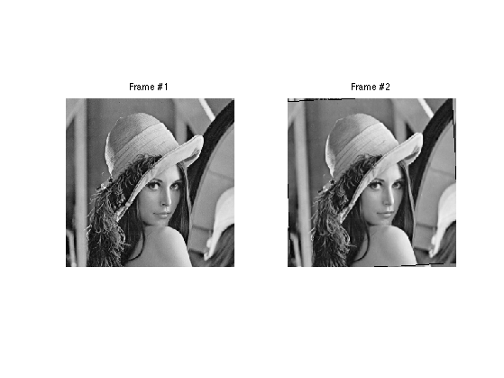
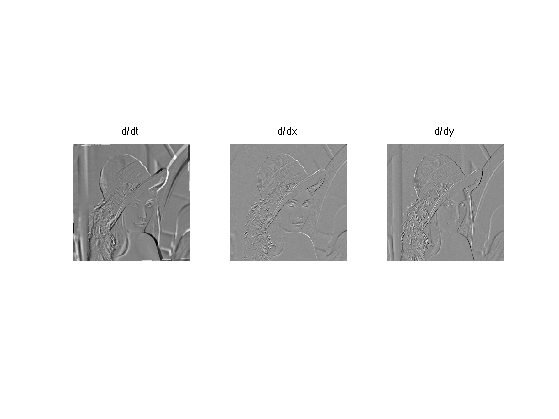
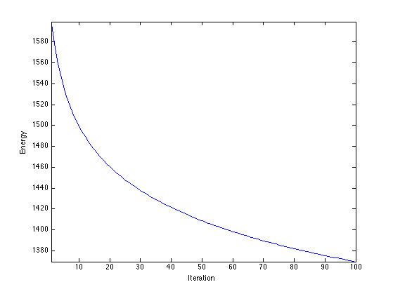
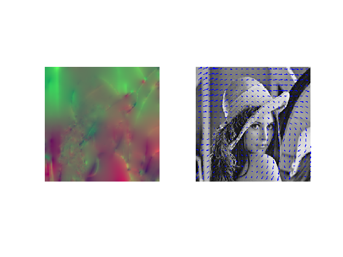
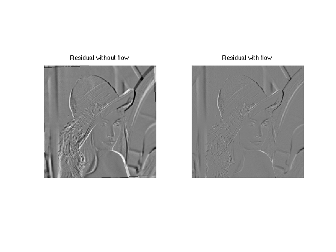
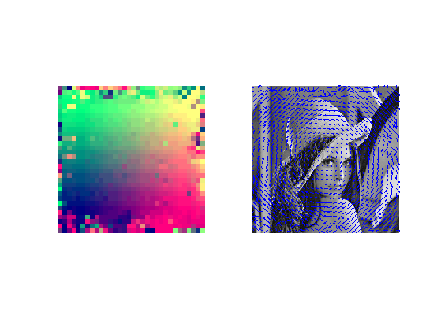
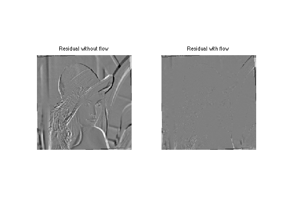

Optical Flow Computation
This numerical tour explores the computation of optical flow between two images. It is at the heart of video coding.
Contents
Installing toolboxes and setting up the path.
You need to download the following files: signal toolbox and general toolbox.
You need to unzip these toolboxes in your working directory, so that you have toolbox_signal and toolbox_general in your directory.
For Scilab user: you must replace the Matlab comment '%' by its Scilab counterpart '//'.
Recommandation: You should create a text file named for instance numericaltour.sce (in Scilab) or numericaltour.m (in Matlab) to write all the Scilab/Matlab command you want to execute. Then, simply run exec('numericaltour.sce'); (in Scilab) or numericaltour; (in Matlab) to run the commands.
Execute this line only if you are using Matlab.
getd = @(p)path(p,path); % scilab users must *not* execute this
Then you can add the toolboxes to the path.
getd('toolbox_signal/'); getd('toolbox_general/');
Loading Warped Images
To evaluate the performance of optical flow computation, we compute a pair of image obtained by a smooth warping (small deformation), here a simple rotation.
Original frame #1.
n = 256;
name = 'lena';
M1 = rescale( load_image(name,n) );
The second image M2 is obtaind by rotating the first one.
% angle of rotation theta = .03 * pi/2; % original coordinates [Y,X] = meshgrid(1:n,1:n); % rotated coordinates X1 = (X-n/2)*cos(theta) + (Y-n/2)*sin(theta) + n/2; Y1 =-(X-n/2)*sin(theta) + (Y-n/2)*cos(theta) + n/2; % boundary handling X1 = mod(X1-1,n)+1; Y1 = mod(Y1-1,n)+1; % interpolation M2 = interp2(Y,X,M1,Y1,X1); M2(isnan(M2)) = 0;
Display the two images.
clf; imageplot(M1, 'Frame #1', 1,2,1); imageplot(M2, 'Frame #2', 1,2,2);
Optical Flow Computation with Regularization
A first approach to optical flow computation is to solve a ill posed problem corresponding to the optical flow equation constraint (consistency of gray level intensity when moving along the flow).
Compute the derivatives in time and space.
global D;
Dt = M1-M2;
D = grad(M1);
Warning: The value of local variables may have been changed to match the globals. Future versions of MATLAB will require that you declare a variable to be global before you use that variable.
Display them.
clf; imageplot(Dt, 'd/dt', 1,3,1); imageplot(D(:,:,1), 'd/dx', 1,3,2); imageplot(D(:,:,2), 'd/dy', 1,3,3);
The optical flow constraint asks for consistency of gray levels when moving along the flow v=[v1,v2]. This is written as a linear equation
Dt + v1.*D1 + v2.*D2=0
This equation does not constrain enough the flow (one equation for two unknown). One thus needs to add other constraints, and this is achieved by performing a Sobolev regularization, as first proposed by Horn and Schunck in the paper:
Horn, B.K.P., and Schunck, B.G., Determining Optical Flow, AI(17), No. 1-3, August 1981, pp. 185-203
This corresponds to a quadratic regularization with a Sobolev prior:
min_{v} norm(Dt + v1.*D1 + v2.*D2)^2 + lambda*norm(grad(v1))^2 + lambda*norm(grad(v2))^2
Its solution is computed by solving a linear system resolution, which sets to zero the gradient of the functional. It can be computed using a gradient descent, or, better, a conjugate gradient descent. We first detail the gradient descent, and shows that is not very efficient.
Regularization strength.
global lambda;
lambda = .1;
Warning: The value of local variables may have been changed to match the globals. Future versions of MATLAB will require that you declare a variable to be global before you use that variable.
Gradient step size.
tau = .2;
Initialization.
v = zeros(n,n,2);
Compute the gradient of the functional. First compute Dt+v1*D1+v2*D2
U = Dt + sum(v.*D,3);
Then compute the Laplacian L(:,:,k) of each channel v(:,:,k) of the vector field
L = cat(3, div(grad(v(:,:,1))), div(grad(v(:,:,2))));
And gather everything together to build the gradient of the functional.
G = D.*repmat(U, [1 1 2]) - lambda * L;
Perform the descent.
v = v - tau*G;
Exercice 1: (check the solution) Perform the gradient descent of the energy, and display the decay of the energy.
exo1;
A much faster algorithm is the conjugate gradient. Several variant are implemented within matlab, and can be used by implementing a callback function.
Set up parameters for the CG algorithm (tolerance and maximum number of iterations.
tol = 1e-5; maxit = 200;
Right hand side of the linear system.
b = -D.*cat(3,Dt,Dt);
Resolution by conjugate gradient.
[v,flag,relres,it,resvec] = cgs(@callback_optical_flow,b(:),tol,maxit); v = reshape(v, [n n 2]);
Display the flow as a color image and as arrows.
clf; imageplot(v, '', 1,2,1); subplot(1,2,2); w = 12; m = ceil(n/w); t = w/2 + ((0:m-1)*w); [V,U] = meshgrid(t,t); hold on; imageplot(M1); quiver(t,t,v(1:w:n,1:w:n,2), v(1:w:n,1:w:n,1)); axis('ij');
Compute the image warped along the flow.
% compute the grid, translated along the flow [Y,X] = meshgrid(1:n,1:n); X = clamp(X+v(:,:,1),1,n); Y = clamp(Y+v(:,:,2),1,n); % compute the first fame, translated along the flow Ms = interp2( 1:n,1:n, M1, Y,X );
One can compare the residual with and without the flow
% residual without flow R0 = M2-M1; % residual along the flow R = Ms-M1; % ensure same dynamic range (just for display) v = max( [max(abs(R0(:))) max(abs(R(:)))] ); R(1)=v; R(2)=-v; R0(1)=v; R0(2)=-v; % display clf; imageplot(R0, 'Residual without flow', 1,2,1); imageplot(R, 'Residual with flow', 1,2,2);
Optical Flow Computation with Block Matching
A second approach to compute the optical flow is to perform local block matching, as first proposed by Lucas and Kanade in
Lucas B D and Kanade T, An iterative image registration technique with an application to stereo vision Proceedings of Imaging understanding workshop, pp 121-130, 1981.
The advantage is that this is more precise than the global Horn/Schunck method, and it might also be faster (no iterative scheme is needed). The desadvantage is that it does not regularize the flow in flat region.
% An optical flow is a vector field that describes % the movement between to % consecutive frames of the video.
The flow can be computed by block matching. A block of (2*k+1,2*k+1) pixels in frame 1 around a location (x,y) is compared to the blocks at locations (x+dx,y+dy) for -q<=dy,dx<=q in the frame 2.
% width of the block w = 8; % search width q = 4; % sub-pixelic search if <1 dq = .5;
Number of flow vector is m^2.
m = ceil(n/w);
Precompute movements vectors.
[X0,Y0,dX,dY] = ndgrid( 0:w-1, 0:w-1, -q:dq:q,-q:dq:q); [dy,dx] = meshgrid(-q:dq:q,-q:dq:q);
Start with empty optical flow. Each f=F(x,y,:) is a 2D vector mapping the patch at location (x,y) to the patch (x+f(1),y+f(2).
F = zeros(n,n,2);
Example of block number for wich the flow is computed. Each index should be less than m
i = 3; j = 40;
Pixel numbers.
x = (i-1)*w+1; y = (j-1)*w+1;
Block pixels index.
selx = clamp( (i-1)*w+1:i*w, 1,n); sely = clamp( (j-1)*w+1:j*w, 1,n);
A special care should be taken at the boundary : we simply clamp values outside boundaries
X = clamp(x + X0 + dX,1,n); Y = clamp(y + Y0 + dY,1,n);
Compute base patch of M2 at which the flow is computed.
P2 = M2(selx,sely);
Compute patches of M1 that are matched. Use interpolation to handle non indeger pixel indexes.
P1 = interp2( 1:n,1:n, M1, Y,X );
Compute the distance between P1 and all the patches of P2.
d = sum(sum( (P1-repmat(P2,[1 1 size(P1,3) size(P1,4)])).^2 ) );
Compute best match and report its value.
[tmp,I] = compute_min(d(:)); F(selx,sely,1) = dx(I); F(selx,sely,2) = dy(I);
Exercice 2: (check the solution) Compute the whole optical flow F, by cycling through the pixels.
exo2;
Display the flow as a color image and as arrows.
clf; imageplot(F, '', 1,2,1); subplot(1,2,2); t = w/2 + ((0:m-1)*w); [V,U] = meshgrid(t,t); hold on; imageplot(M1); quiver(t,t,F(1:w:n,1:w:n,2), F(1:w:n,1:w:n,1)); axis('ij');
Residual Computation
The optical flow F allows one to compute the residual R between frame M2 and an extrapolated version of M1 along the flow F.
One can translate the first frame M1 along the flow F.
% compute the grid, translated along the flow [Y,X] = meshgrid(1:n,1:n); X = clamp(X+F(:,:,1),1,n); Y = clamp(Y+F(:,:,2),1,n); % compute the first fame, translated along the flow Ms = interp2( 1:n,1:n, M1, Y,X );
One can compare the residual with and without the flow
% residual without flow R0 = M2-M1; % residual along the flow R = M2-Ms; % ensure same dynamic range (just for display) v = max( [max(abs(R0(:))) max(abs(R(:)))] ); R(1)=v; R(2)=-v; R0(1)=v; R0(2)=-v; % display clf; imageplot(R0, 'Residual without flow', 1,2,1); imageplot(R, 'Residual with flow', 1,2,2);